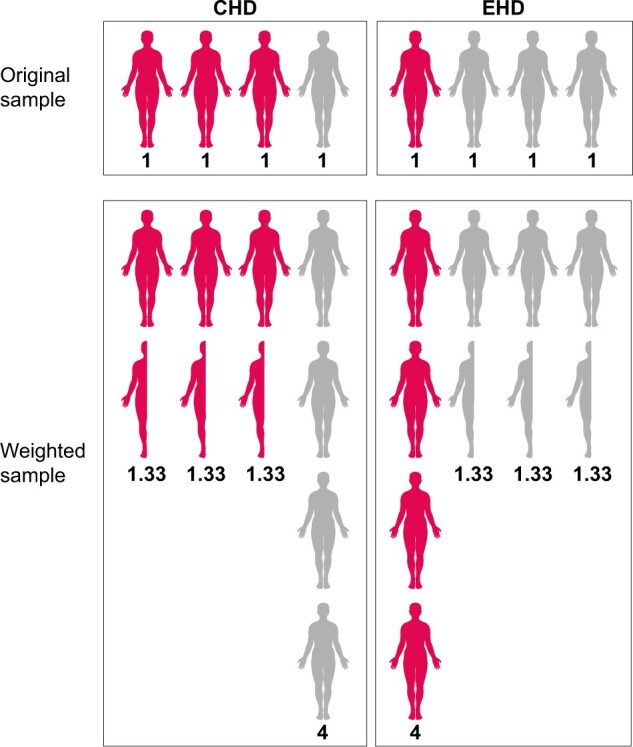

Methods #2: Conventional approaches#
Executive summary
Conventional methods for causal effect estimation (not suitable for time-varying or unobserved confounding). Often using propensity scores, which are the probability of being in the treatment/exposure group, given your baseline characteristics.
Create pseudo-population to mimic randomised population using:
(Principal) Stratification - seperate participants based on their values of the confounder
Matching - create same distribution of confounders in treated and untreated groups
Inverse probability of treatment weighting (IPTW) - weight each individual by the inverse of their probability of receiving their actual treatment, resulting in equal distribution of confounders in the treated and untreated groups
Or:
Multivariable regression - inclusion of confounders as covariates in the model
Conventional approaches for causal effect estimation#
The most common methods typically focus on conditioning on some set of common causes of the exposure and outcome.
In RCTs, you are controlling for intercurrent events (ICEs), which are defined ‘a post-randomization event that “affect either interpretation or existence of the measurements associated with clinical questions of interest.”’. Examples include compliance to an assigned treatment, death before follow-up, treatment switching, etc.[Lipkovich et al. 2022]
Although these are very common - ‘described in a zillion publications’ - they only work in simpler settings, and cannot handle causal inference with time-varying treatments (such as is the case for complex longitudinal data).[Hernán and Robins 2024]
These approaches are:
Stratification
Matching
Inverse probability of treatment weighting
Multivariable regression / covariate adjustment
Propensity score matching is recommended over stratification or covariate adjustment (multivariable regression) as it eliminates a greater proportion of systemic differences in baseline characteristics between treated and untreated. [Wijn et al. 2022]
Inverse probability weighting can be used for baseline imbalances or time-varying confounding - so is expanded on in the G-methods page.
However, I first introduce propensity scores, as these are used within variants of several methods.
Propensity scores#
A propensity score is the ‘probability of treatment assignment conditional on observed baseline characteristics’. It was defined by was Rosenbaum and Rubin (1983). It is a ‘balancing score: conditional on the propensity score, the distribution of measured baseline covariates is similar between treated and untreated subjects’. [Austin 2011]
Propensity scores are often estimated using a logistic regression model with:
Outcome = Treatment (e.g. insulin therapy)
Predictors = Observed baseline characteristics (e.g. blood pressure, BMI, lipid profile)
Propensity score = Predicted probability of treatment from the fitted model [Valojerdi et al. 2018]
Image from Shaw Talebi on Towards Data Science:

Use of a propensity score enables incorporation of ‘a larger number of background covariates because it uses the covariates to estimate a single number’. [Valojerdi et al. 2018]
Four different propensity scores methods are used for removing the effects of confounding:
Stratification on the propensity score
Propensity score matching
Inverse probability of treatment weighting (IPTW) using the propensity score
Covariate adjustment using the propensity score [Austin 2011]
Assumptions of propensity score analysis/methods:
All covariates related to outcome and treatment (exposure) are measured and included
SUTVA - treatment effect for one individual is not affected by the treatment status of another
The assumptions of logistic regression [Valojerdi et al. 2018]
Stratification#
Stratification or principal stratification is the simplest method to control confounding.[Tripepi et al. 2010] It is represented by drawing a box on the DAG.[HarvardX PH559x]
It was proposed by Frangakis and Rubin 2002.[source] It has gained popularity since the ICH E9 addendum on statistical principles for clinical trials, which listed it as a valid approach to ICEs.[source] The use of stratification to adjust for confounding is so common that some investigators consider the terms ‘stratification’ and ‘adjustment’ synonymous. Whilst it can be used to adjust for confounding - but it can also be used to identify effect modification.[Hernán and Robins 2024]
Principal stratification involves partitioning participants into principal strata - i.e. particular values of a variable. ‘Stratification necessarily results in multiple stratum-specific effect measures (one per stratum defined by the variables L). Each of them quantifies the average causal effect in a nonoverlapping subset of the population but, in general, none of them quantifies the average causal effect in the entire population.’ Instead, they are conditional effect measures. [Hernán and Robins 2024]
‘Often, one of the principal strata is the focus of inference, but sometimes it is of interest to combine principal effects across several (or all) principal strata while accounting for a confounding effect of a post-randomization variable.’[Lipkovich et al. 2022] Hence, stratification involves either:
Restricting analysis to subset of study population with particular value of confounder.[HarvardX PH559x] This type of stratification is referred to as restriction. When positivity fails for some strata of the population (i.e. impossible to get a certain exposure), restriction is used to limit causal inference to the strata where it does hold. [Hernán and Robins 2024]
Performing analysis in each stratum of confounder.[HarvardX PH559x] For causal inference, stratification is simply applies restriction to several mutually exclusive subsets of the population, with exchangeability within each subset. [Hernán and Robins 2024]
Simple example#
Exposure: Birth order
Outcome: Down syndrome
Potential confounder: Maternal age
See figure:
(a) Association of down syndrome with birth order and age groups seperately
(b) Down syndrome cases stratified by birth order and maternal age
Can observe that crude association between birth order and Down syndrome was just due to maternal age (as in each age category, birth order did not affect down syndrome frequency, but in each birth order category, age did). [Tripepi et al. 2010]

Mantel-Haenszel Formula#
The Mantel-Haenszel formula can be used to provide a pooled odds ratio across different strata. There are alternative methods (e.g. Woolf and inverse variance) but the Mantel-Haenszel method is generally the most robust.[source]
Key steps:
Calculate crude relative risks (RR) or odds ratio (OR) (i.e. without stratifying)
Stratify by confounding variable and calculate stratum-specific RR or OR
Assess whether effect estimates are roughly homogenous across strata and do not differ from that in the whole group
If they are homogeneous, this means there is no confounding, and you can calculate the overall adjusted RR or OR by the Mantel-Haenszel formula. The pooling estimate provides an average of the stratum-specific RRs or ORs with weights proportional to the number of individuals in each stratum.
If they are heterogeneous and we are interested in effect modification, stratum-specific effect estimates should be reported separately. [Tripepi et al. 2010]
Stratification on the propensity score#
You can stratify subjects based on their propensity scores. ‘The literature showed that five strata are adequate to reduce at least 90% of the bias associated with a confounding variable. With a large sample size, we can use between 10 or 20 strata.’ [Valojerdi et al. 2018]
Limitations of stratification#
Computes conditional effect measures (not average effect measures)
Requires computation of effect measures in subsets of population defined by combining all variables required for conditional exchangeability[Hernán and Robins 2024]
This can be laborious and demands a large sample size when there is more than one confounder.[Tripepi et al. 2010] It is therefore ‘prone to sparse-data problem (it occurs when there are few or no study participants at some combinations of the outcome, exposure, and covariates) and unstable estimates’, and as such, ‘is rarely used in practice’. [Gharibzadeh et al. 2016]
This is even if we’re not interested in such effect modification. Solution: Stratification by something of interest (i.e. effect modifier) followed by IP weighting or standardisation (to adjust for confounding) allows you to deal with exchangeability (confounders) and effect modification (modifiers)
Noncollapsibility of certain effect measures like the odds ratio [Hernán and Robins 2024] - i.e. ‘the crude OR from the marginal table cannot be expressed as the weighted average of the stratum-specific ORs even in the absence of confounding’ - as ‘the magnitude of the OR is different when comparing the aggregate analysis to the subgroup analysis’ - but both estimates are still valid. Other effect measures are collapsible e.g. stratified risk ratios [Pang et al. 2013]
Requires continuous confounders to be constrained to a limited number of categories, which could generate residual confounding [Tripepi et al. 2010]
Exclude treated individuals#
A variant on stratification is an anlysis which simply exclude treated individuals. This is proposed in the context of a treatment paradox, where you’re interested in the direct causal effect of an exposure on the outcome that is not mediated via decision to treat, which is based on presence of the exposure.
Limitations:
Will ‘decrease the effective sample size’ (which could cause you to not see an effect if you don’t have the power). This, for example, leads to ‘the precision of estimates of both the observed:expected ratio and c-index (area under the ROC curve) decreased due to the reduction in effective sample size’.
Results in loss of information about high risk individuals, if treatment allocation was dependent on risk (and so very few were untreated), with the discriminative ability of the model worsening with the exclusion of high-risk individuals and consequently narrower case mix.
‘In the presence of a strong unmeasured predictor of the outcome associated with treatment use, exclusion of treated individuals resulted in an underestimation of the performance of the model.’
Matching#
Matching involves selecting a sample where exposed and unexposed groups have the same distribution of confounders.[HarvardX PH559x] We often start with the group with fewer individuals, and then use the other group to find matches. It does not have to be one-to-one (matching pairs) - it can be one-to-many (matching sets). Matching is often based on a combination of confounders. [Hernán and Robins 2024]
Matching can’t be represented in DAG, because non-faithfulness - the association to a backdoor path is exactly cancelled by the matched subset.[HarvardX PH559x]
We make an assumption of conditional exchangeability given L (the confounder), meaning that matching results in ‘(unconditional) exchangeability of the treated and untreated in the matched population’, and so we directly compare their outcomes. Matching ensures positivity since strata with only treated or untreated individuals are excluded. [Hernán and Robins 2024]
Matching methods#
Above describes individual matching, but you can also use frequency matching. For example, randomly selected individuals but ensuring 70% have L=1 (certain value of confounder), and then repeating for the other population. [Hernán and Robins 2024]
There are a few approaches to matching, which include:
Propensity score matching - matched based on propensity scores
This is commonly one-to-one matching based on similar values of the propensity score, which can be done with or without replacement, but with replacement can decrease bias and is helpful where the numbers of controls are limited. [Valojerdi et al. 2018]
Selecting the propensity score ‘close’ to the treated subject is done using either nearest neighbour matching or nearest neighbour matching within a specific caliper distance.
You can choose between greed matching or optimal matching
Outcomes…
‘If the outcome is continuous (e.g., a depression scale), the effect of treatment can be estimated as the difference between the mean outcome for treated subjects and the mean outcome for untreated subjects in the matched sample’
‘If the outcome is dichotomous (self-report of the presence or absence of depression), the effect of treatment can be estimated as the difference between the proportion of subjects experiencing the event in each of the two groups (treated vs. untreated) in the matched sample. With binary outcomes, the effect of treatment can also be described using the relative risk or the NNT.’
‘Once the effect of treatment has been estimated in the propensity score matched sample, the variance of the estimated treatment effect and its statistical significance can be estimated.’ [Austin 2011]
Matched difference-in-differences - perform matching then compute difference-in-differences - this controls for unobserved, time-invariant characteristics between the groups
Synthetic control method - weight one group in a manner to it closely resembles the other group Above, we are describing the synthetic control method. [source]
Limitations of matching#
Requires extensive datasets to properly match, with detailed information on baseline characteristics, but this is not always available
Assumes there are no unobserved characteristics between the matched groups. Possible solution: Matched difference-in-differences. [source]
Computes conditional effect measures (not average effect measures) - i.e. only for certain subset of population [Hernán and Robins 2024]
Inverse probability of treatment weighting (IPTW) with baseline covariates#
Names:
Inverse probability weighting (IPW)
Inverse probability of treatment weighting (IPTW)
Propensity score weighting
IPTW is one of the various propensity score methods. Below describes IPTW to account for confounders at baseline, but it can be used to:
Estimate parameters of a marginal structure model and adjust for confounding measured over time (see page on G-methods).
Account for informative censoring (pateitsn censored when lost to follow-up or reach study end without encountering event) - calculating inverse probability of censoring weights or each time point as the inverse probability of remaining in the study up to the current time point, given the previous exposure, and patient characteristics related to censoring [Chesnaye et al. 2022]
IPTW involves using the propensity scores to balance the baseline characteristics in the treated and untreated (or ‘exposed and unexposed’) groups. This is done by weighting each individual by the inverse probability of receiving their actual treatment. [Chesnaye et al. 2022]
Actual group |
Estimated probability of being in this group |
Inverse |
|---|---|---|
Exposed / Treated |
|
|
Unexposed / Untreated |
|
|
This means that larger weights go to:
Exposed individuals with a lower probability of exposure
Unexposed individuals with a higher probability of exposure
Conceptually, IPTW can be considered mathematically equivalent to standardisation.
As IPTW aims to balance patient characteristics in the exposed and unexposed groups, it is considered good practice to assess the standardized differences between groups for all baseline characteristics both before and after weighting. The advantage of checking standardized mean differences is that it allows for comparisons of balance across variables measured in different units. As a rule of thumb, a standardized difference of <10% may be considered a negligible imbalance between groups. If the standardized differences remain too large after weighting, the propensity model should be revisited (e.g. by including interaction terms, transformations, splines). [Chesnaye et al. 2022]
Example#
Study on receiving extended-hours haemodialysis (EHD) treatment v.s. conventional HD (CHD)
Want to balance distribution of diabetes - at baseline, higher % diabetes patients in CHD group than in EHD group
Patients with diabetes have 25% probability of receiving EHD = propensity score of 0.25
To balance distribution, weight-up patients in EHD group by inverse of propensity score, which is 1/0.25=4, so conceptually each EHD diabetes patient represents four patients, creating a “pseudo-population”
Similarly, CHD diabetes patients weighted by 1/(1-0.25)=1.33.
Diabetes now equally distributed across the EHD and CHD groups
These weights can then be incorporated into an outcome model to get an estimate of the average treatment effect adjusted for confounders
‘As the weighting creates a pseudopopulation containing ‘replications’ of individuals, the sample size is artificially inflated and correlation is induced within each individual. This lack of independence needs to be accounted for in order to correctly estimate the variance and confidence intervals in the effect estimates, which can be achieved by using either a robust ‘sandwich’ variance estimator or bootstrap-based methods.’ [Chesnaye et al. 2022]
Diabetes + Group |
Estimated probability |
Estimated probability |
Inverse |
|---|---|---|---|
Diabetes + CHD |
0.25 |
0.75 |
1/0.75 = 1.33 |
No diabetes + CHD |
0.75 |
0.25 |
1/0.25 = 4 |
Diabetes + EHD |
0.25 |
0.25 |
1/0.25 = 4 |
No diabetes + EHD |
0.75 |
0.75 |
1/0.75 = 1.33 |
Image from Chesnaye et al. 2022:

Strengths and limitations#
Strengths:
(As for all propensity score-based methods) able to summarise all characteristics in a single covariate
Retains more individuals than propensity score matching
Can be used for categorical or continuous exposures (whilst matching generally compares a single treatment group with a control group)
Estimates hazard ratios with less bias than propensity score stratification or adjustment using the propensity score
Can be used in marginal structural models to correct for time-dependent confounders
Limitations:
Simulation studies have shown IPTW can be no better than multivariable regression
IPTW cautioned against for sample sizes under 150 due to underestimation of the variance (i.e. standard error, confidence interval and P-values) of effect estimates
‘Sensitive to misspecifications of the propensity score model, as omission of interaction effects or misspecification of functional forms of included covariates may induce imbalanced groups, biasing the effect estimate’ [Chesnaye et al. 2022]
‘Propensity values near 0 and 1 yield extreme weights (after taking the inverse)’[source] - i.e. not recommended when propensities are small (close to 0) as weights can be unstable
ATE may not always be the sensible estimand [source]
Assumptions#
‘Treatment effects obtained using IPTW may be interpreted as causal under the following assumptions:
Exchangeability
No misspecification of the propensity score model
Positivity
Consistency’ [Chesnaye et al. 2022]
IPTW variants#
One of the limitations described above is that propensity values near 0 and 1 yield extreme weights. This can ‘inflate the variance and confident intervals of the effect estimate. This may occur when the exposure is rare in a small subset of individuals, which subsequently receives very large weights, and thus have a disproportionate influence on the analysis.’ It’s worth considering why these individuals have such a low probability of being treatment but actually receive the treatment, or vice versa - they may be outliers. For example, ‘patients with a 100% probbaility of receiving a particular treatment would not be eligible to be randomised to both treatments’. There are variants to IPTW that attempt to address some of its limitations. [Chesnaye et al. 2022]
Weight stabilisation#
Replace ‘numerator (which is 1 in the unstabilized weights) with the crude probability of exposure (i.e. given by the propensity score model without covariates).’
‘In case of a binary exposure, the numerator is simply the proportion of patients who were exposed. Stablised weights can therefore be calculated as:’
exposed / propensity_score, instead of1 / propensity_scoreunexposed / (1-propensity score), instead of1 / (1-propensity score)
‘Stabilized weights should be preferred over unstabilized weights, as they tend to reduce the variance of the effect estimate’ [Chesnaye et al. 2022]
In other weights, weight stabilisation invovles multiplying the unstabilised weight by the probability of the observed exposure without conditioning on the confounders, and so it the stablised weight is the ‘ratio of the unconditional probability (the numerator) to the conditional probability (the denominator)’.[Xie et al. 2017]
Propensity score trimming and truncation#
Symmetric trimming - exclude patients with a score outside [a, 1-a], with often a=0.1, so [0.1, 0.9] [source] - typically 1st and 99th percentiles, but lower thresholds can reduce variance [Chesnaye et al. 2022]
Asymmetric trimming - exclude patients with a score outside the common range formed by the treated and control patients, and below the q quantile of treated and above the 1-q quantile of control
Propensity score truncation - set patients with a score below a to a, and above 1-a to 1-a [source]
‘Truncating weights change the population of inference and thus this reduction in variance comes at the cost of increasing bias’. [Chesnaye et al. 2022]
Augmented inverse propensity weighting (AIPW)#
Augmented inverse propensity weighting (AIPW) involves:
Fitting a propensity score model (i.e. estimated probability of treatment assignment conditional on baseline characteristics)
Fit two seperate models that estimate the outcome - one under treatment and one under control
Weight each outcome by the propensity scores
This improves on IPW to combine information about the probability of treatment and predictive information about the outcome variable. It is a doubly robust estimator / has the property of double robustnesss. This means ‘that it is consistent (i.e., it converges in probability to the true value of the parameter) for the ATE if either the propensity score model or the outcome model is correctly specified’.
AIPW is more flexible as it doesn’t require the same set of covariates to be used for the propensity score model and model estimaing treatment-outcome relationship. [Kurz 2022]
Excluding treated individuals#
Pajouheshnia et al. 2017 propose to exclude treated individuals after IPTW - i.e. stratifying the sample but focussing only on untreated - so that the resulting validation set resembles the untreated target population. [Pajouheshnia et al. 2017] This is proposed in the context of the treatment paradox, with the intention of finding the direct effect of the exposure on outcome not mediated by treatment.
In their simulation study, Pajouheshnia et al. 2017 find that IPW alone did not improve calibration (compared to when we did nothing to account for the treatment paradox), but IPW followed by the exclusion of treated individuals provided correct estimates for calibration. IPW alone or followed by the exclusion of treated individuals improved estimates of the c-index in all scenarios where the assumptions of positivity and no unobserved confounding were met. In scenario 4, where treatment allocation was determined by a strict risk-threshold and thus the assumption of positivity was violated, IPW was ineffective, and resulted in the worst estimates of discrimination across all methods. In addition, the extreme weights calculated in scenario 4 led to very large standard errors. In scenarios 13–15, the presence of an unobserved confounder led to the failure of IPW to provide correct estimates of the c-index. Weight truncation at the 98% percentile increased precision, but was less effective in correcting of the c-index for the effects of treatment.
‘Although the use of IPW prior to the exclusion of treated individuals is a promising solution in data where treatments are non-randomly allocated, it should not be used when there are severe violations of the underlying assumptions, e.g. in the presence of non-positivity (where some individuals had no chance of receiving treatment), or when there is an unobserved confounder, strongly associated with both the outcome and treatment use. There is thus a need to explore alternative methods to IPW to account for the effects of treatment use when validating a prognostic model in settings with non-random treatment use.’ [Pajouheshnia et al. 2017]
Multivariable regression#
In multivariable regression, the confounders are included as covariates. [Valojerdi et al. 2018]
This can be through including individual covariaties, or by just including the estimated propensity score as a covariate in the regression model. This can be attractive as it allows the incorporation of many covariates. However, it should be used with caution, as ‘bias may increase when the variance in the treated and untreated groups are very different (actually, the untreated group variance is much larger than the treated groups variance).’ [Valojerdi et al. 2018]
Other methods#
Important note: These are not approaches that haved turned up in the causal inference literature, but instead, that I have come across in the context of dealing with a treatment paradox. They will be related to causal inference - I haven’t thought through how. I would advice caution - these are largely not recommended methods for causal inference.
Use treatment as the outcome#
Cheong-See et al. 2016 propose that, when starting a treatment is likely to prevent an adverse outcome, those who received the treatment could also be considered to have experienced the outcome. For example, ‘in women with early-onset pre-eclampsia, if a large proportion of women are delivered at an early preterm gestation (before 34 weeks), then delivery itself could be considered as an outcome (replacing complications that would have occurred in the absence of delivery). In the absence of a standardised protocol for decision to deliver at early preterm gestation, such an approach could help to overcome the limitations in the model as a result of delivery preventing the occurrence of an adverse outcome.’[Cheong-See et al. 2016]
The existence of fully standardised care with no variation in treatment (or variation that you can account for)#
This is a scenario where there is complete collinearity between the predictor and the treatment, where the presence of a particular predictor will always guarantee the presence of a particular treatment.
However, that requires no variation in treatment - that the same medications and dosages are always provided at the same treatment thresholds at the same times. This is not realistic. With the example of management of early-onset pre-eclampsia, such as the commencement of anti-hypertensives and magnesium sulphate, this is somewhat standardised by guidelines [e.g. from the National Institute for Health and Care Excellence (NICE) in the UK], but the threshold for commencing treatment varies between clinicians and centres. Furthermore, the response from a specific antihypertensive and dosage varies between individual patients.
This limits the applicability of such a strategy, although one could consider the use of multilevel models to allow for any differences between clinicians and treatment centres.’[Cheong-See et al. 2016]
Steer 2016 comments that ‘such models rarely take into account all of the relevant factors (e.g. the coexistence of a modulating pathology such as an autoimmune disorder) or the social and emotional circumstances and preferences of the mother and her family.’[Steer 2016]
Predictor substition#
You could remove all the predictors upon which the decision to treat is based on, and substitute them with alternative predictors.
Limitations:
Can prevent you from including meaningful predictors in the model
Other predictors may be correlated with the predictors used to make treatment decisions.
Incorporation of treatment as a predictor in the model#
Another method is to include treatment use as a predictor in the prognostic model.[Pajouheshnia et al. 2017][Schuit et al. 2013] In practice, you won’t be able to input “they have been treated or not” for the as-yet untreated patients - but you could use the model to estimate outcomes in scenarios where they are or are not treated.[Pajouheshnia et al. 2017]
You could just add the indicator on top of the prognostic model, keeping the original coefficients fixed.[Pajouheshnia et al. 2017] However, if there is an interaction between the effectiveness of treatment and having a predictor (e.g. more effective in those with predictor), then the model will need to account for/incorporate this interaction.[Schuit et al. 2013] Instead therefore, the model could be entirely refitted with the addition of an indicator term for treatment, with the inclusion of interaction terms where anticipated.[Pajouheshnia et al. 2017]
Limitations:
Failure to correctly specify any interactions between treatment and other predictors in the validation set could mean that the effects of treatment are not completely taken into account[Pajouheshnia et al. 2017]
The addition of a term for treatment to the model that is to be validated may improve the performance beyond that of the original model due to the inclusion of additional predictive information[Pajouheshnia et al. 2017]
Not possible if everyone in the study had the same intervention (but in that case, it is likely that unexpected findings are not due to a treatment paradox)[Schuit et al. 2013]
With this approach, ‘differentiating treatment from predictor effects becomes difficult. We could adjust for the interaction between ‘decision to treat’ as a predictor and each of the other prognostic factors in the model; however, when many predictors are involved, or when ‘decision to treat’ is based on multiple predictors, this approach becomes complex. In such situations, extremely large sample sizes are needed for the reliable assessment of interactions.’[Cheong-See et al. 2016]
Due to the limitations, Pajouheshnia et al. 2017 do not recommend this approach.[Pajouheshnia et al. 2017]
Recalibration#
Don’t yet understand: ‘The incidence of the predicted outcome may vary between development and validation data sets. If this is the case, the predictions made by the model will not, on average, match the outcome incidence in the validation data set [22]. As discussed in section 2.1, use of an effective treatment in a validation data set will lead to fewer outcome events and thus a lower incidence than there would have been had the validation set remained untreated. One approach to account for this would be to recalibrate the original model using the partially treated validation data set. In a logistic regression model, a derivative of the incidence of the outcome is captured by the intercept term in the model, and thus a simple solution would seem to be to re-estimate the model intercept using the validation data set [23, 24]. In doing this, the average predicted risk provided by the recalibrated model should then be equal to the (observed) overall outcome frequency in the validation set. Further details of this procedure are given in Table Table1.1. Where treatment has been randomly allocated, intercept recalibration should indeed account for the risk-lowering effects, provided that the magnitude of the treatment effect does not vary depending on an individual’s risk and thus is constant over the entire predicted probability range. In non-randomized settings, where treatment use by definition is associated with participant characteristics, a simple intercept recalibration is unlikely to be sufficient due to interactions between treatment use and patient characteristics that are predictors in the model. However, although recalibration may seem a suitable solution for modelling the effects of treatment, when applying recalibration, concerns should also be raised over the interpretation of the estimated performance of the model. Differences in outcome incidence between the development data set and validation data set may not be entirely attributable to the effects of treatment use. By recalibrating the model to adjust for differences in treatment use and effects, we simultaneously adjust for differences in case-mix between the development and validation set. As the aim of validation is to evaluate the performance of the original prognostic model, in this case in a treatment-naïve sample, recalibration may actually lead to an optimistic impression of the accuracy of predictions made by the original model in the validation set. For example, if the validation set included individuals with a notably greater prevalence of comorbidities and thus were more likely to develop the outcome, recalibration prior to validation could mask any inadequacies of the model when making predictions in this subset of high-risk individuals.’[Pajouheshnia et al. 2017]
Due to the limitations, Pajouheshnia et al. 2017 do not recommend this approach.[Pajouheshnia et al. 2017]